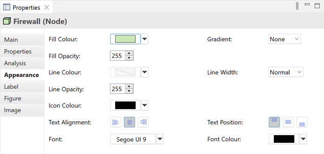
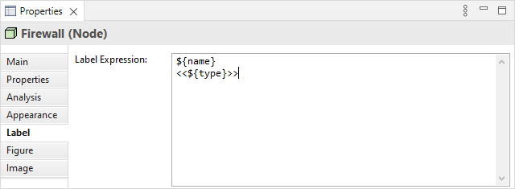
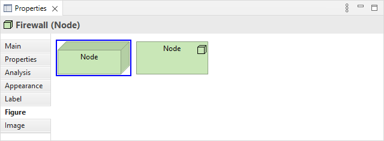
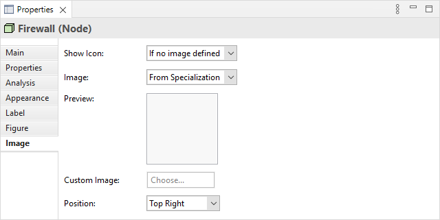

在视图中选择一个元素意味着您可以在属性窗口中编辑或查看额外的视觉属性。可以为元素在每个独立的视图出现中应用不同的视觉设置。例如,元素“应用服务”在一个视图中可以是蓝色的,在另一个视图中可以是灰色的。
外观标签页
编辑视图中ArchiMate元素的“外观”属性
此标签页仅在视图中的元素被选中时可用。
| 填充颜色: | 设置所选元素的填充颜色。“默认”按钮将填充颜色设置为默认设置。 |
| 渐变: | 设置用于绘制所选元素渐变填充的方向。设置有“无”、“顶部”、“左侧”、“右侧”和“底部”。注意 - 当以 SVG 图像格式导出图时,渐变将不可见。 |
| 填充不透明度: | 设置图形的填充不透明度。范围从 0-255。 |
| 线条颜色: | 设置用于绘制所选元素的线条颜色。“派生自填充颜色”下拉选项根据填充颜色设置线条颜色。“默认”下拉选项将线条颜色设置为首选项中设置的默认颜色。如果“默认”下拉选项不可见,则是因为线条颜色是从元素的填充颜色派生的,如“派生自填充颜色”下拉选项中所设置的。 |
| 线宽: | 设置用于绘制所选元素的线条宽度。选项有“正常”、“中等”和“粗”。 |
| 线不透明度: | 设置图形的线不透明度。范围从 0-255。 |
| 图标颜色: | 设置图形中ArchiMate小图标的颜色。“默认”按钮将线条颜色设置为默认设置。 |
| 文本对齐: | 将所选元素中的文本对齐到左侧、居中或右侧。 |
| 文本位置: | 将所选元素中的文本对齐到顶部、中间或底部。 |
| 字体: | 设置所选元素中文本的字体。“默认”按钮将字体设置为在首选项中设置的默认字体。 |
| 字体颜色: | 设置所选元素中文本的颜色。“默认”按钮将字体颜色设置为默认设置。 |
标签页
添加要在视图中显示的标签表达式
此标签页仅在视图中的元素被选中时可用。
默认情况下,元素的名称将显示在其出现的任何视图中。使用每个视图实例的标签表达式,您可以选择在视图中显示元素的内容。例如,您可能希望显示元素的名称和类型。或者,您可能希望显示一个或多个属性的值。
有关表达式类型的完整列表,请参阅 Archi Wiki。
图形标签页
为设备设置“图形”属性
在视图中为ArchiMate元素选择要使用的图形。此标签页仅在视图中的元素被选中时可用,并且仅适用于ArchiMate元素。
在首选项中可以设置创建新元素时要使用的默认图形。
图像标签页
元素的图像属性
可以在视图中的ArchiMate元素中显示来自其专业化或自定义图像的图像。
| 显示图标: | 是否显示ArchiMate图形的小图标。选项有“如果未定义图像”、“总是”和“从不”。 |
| 图像: | 选择图像的源。如果ArchiMate对象链接到专业化并且您想要显示专业化的图像,请选择“来自专业化”。如果您想要显示与专业化无关的图像,请选择“自定义”。 |
| 预览: | 显示图像在元素中呈现的效果的预览图像。双击预览框将启动图像选择器对话框。您也可以从桌面拖放一个图像文件到预览框上。注意 - 如果选择了“来自专业化”,则此项被禁用。 |
| 自定义图像: | 为对象选择一个自定义图像或清除图像。有关更多详细信息,请参阅“向对象添加图像”。注意 - 如果选择了“来自专业化”,则此项被禁用。 |
| 位置: | 设置图像相对于对象的位置。 |